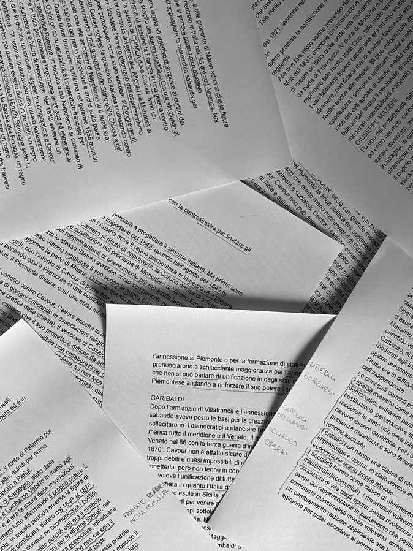
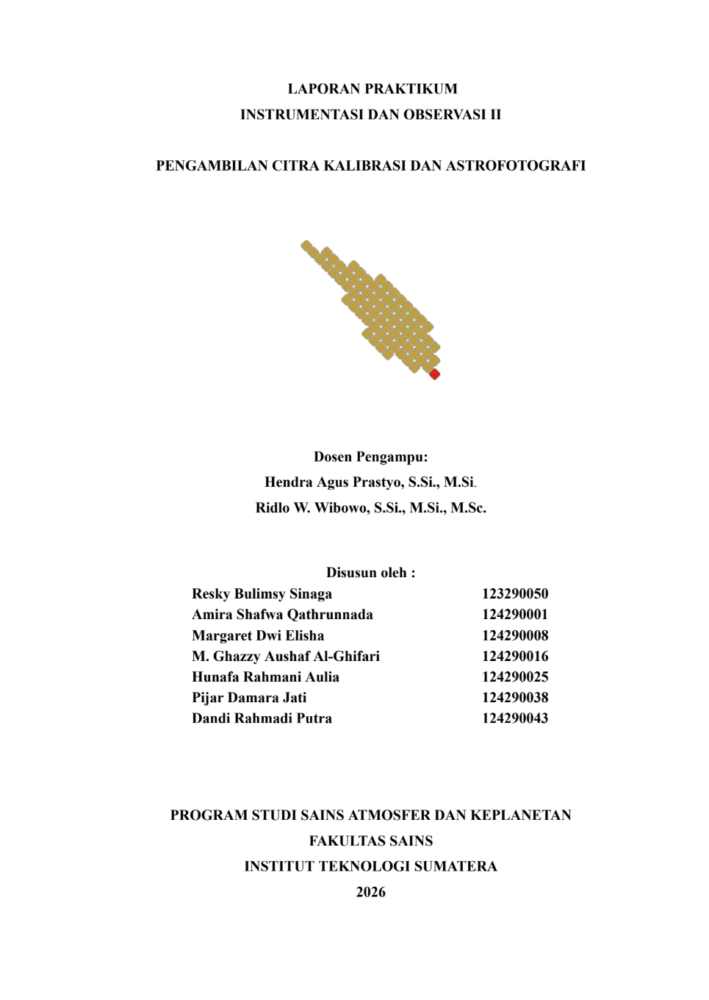
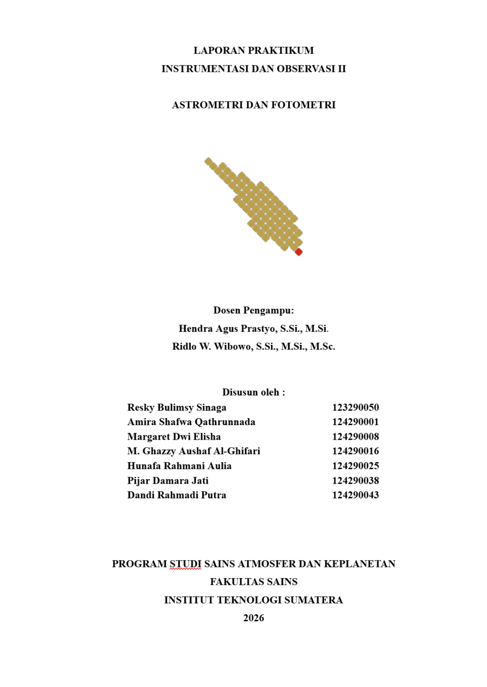

Praktikum ini membahas proses perakitan teleskop portable beserta pengenalan komponen-komponen utamanya. Mahasiswa mempelajari teknik pointing untuk mengarahkan teleskop ke objek langit tertentu secara tepat sehingga observasi dapat dilakukan dengan lebih efektif.
Praktikum ini berfokus pada proses polar alignment untuk menyelaraskan mount teleskop dengan sumbu rotasi Bumi. Selain itu, mahasiswa mempelajari penggunaan kamera CCD sebagai instrumen akuisisi data astronomi guna menghasilkan citra objek langit yang berkualitas.

Praktikum ini berfokus pada pengambilan citra kalibrasi berupa bias, dark, dan flat frame untuk meningkatkan kualitas data astronomi. Selain itu, dilakukan pengambilan citra objek langit menggunakan teknik astrofotografi serta pengolahan data untuk menghasilkan citra yang lebih akurat dan siap dianalisis.

Praktikum ini membahas metode astrometri untuk menentukan posisi objek langit serta teknik fotometri untuk mengukur tingkat kecerlangannya. Data citra yang diperoleh dianalisis menggunakan perangkat lunak astronomi sehingga dapat menghasilkan informasi kuantitatif mengenai objek yang diamati.
Praktikum ini memperkenalkan spektrograf sebagai instrumen yang digunakan untuk memisahkan cahaya berdasarkan panjang gelombangnya. Mahasiswa mempelajari prinsip kerja spektrograf, proses akuisisi spektrum, serta interpretasi informasi fisik yang terkandung dalam spektrum benda langit.